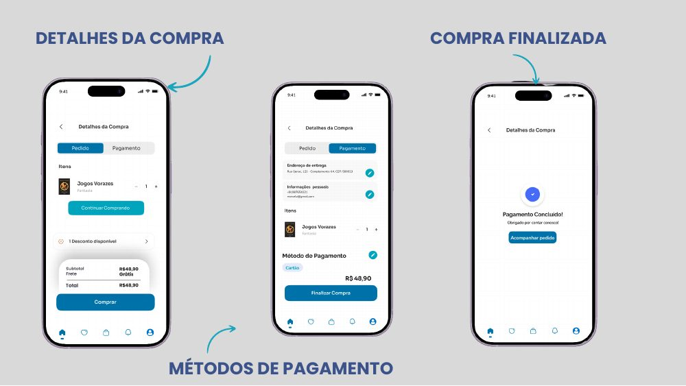

Projeto Integrador · Conecta Dev
Tesouro Literário 1ª versão no GitHub
E-commerce de livros completo para uma livraria física que precisava vender online. Desenvolvido em dupla, do design à primeira versão funcional.
Site + App Android → API Node.js/Express → SQL Server (Azure)
Node.jsExpressSQL ServerKotlinComposeFigmaAzure
- Catálogo, busca, filtros, carrinho e pagamento por Pix ou cartão
- App Android em Kotlin com Compose, MVVM e Retrofit
- Login com perfis de cliente e administrador, senha protegida e conformidade com a LGPD
- Protótipo no Figma, modelagem do banco e orçamento do projeto